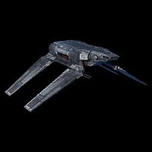
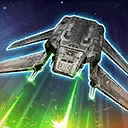
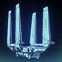
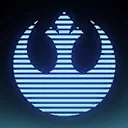

Rogue One
A covert Rebel Support ship that slips through enemy lines while empowering allies.

A covert Rebel Support ship that slips through enemy lines while empowering allies.
Deal Special damage to all enemies.
If Profundity is the active ally Capital Ship: Call Outrider to assist and reduce target enemy's Speed by 10 for 2 turns, which can't be evaded or resisted.
Rebel allies recover 20% Protection and gain Tenacity Up for 2 turns and if the enemy Capital Ship was Empire at the start of battle, inflict Accuracy Down on target enemy for 2 turns, which can't be resisted.
If Profundity is the allied Capital Ship, reduce the cooldown of all Rebel allies by 1.

Deal Special damage to target enemy 3 times and Target Lock them for 2 turns.
If the enemy Capital Ship is Empire, this Target Lock can't be resisted.

At the start of battle if the ally Capital Ship is Profundity: Rogue One gains 25% Max Health, and, if Rogue One is in the Reinforcement slot and the enemy Capital Ship is Empire, all Rebel allies gain Breach Immunity, which can't be copied, dispelled, or prevented and Protection Up (100%) for 2 turns which can't be dispelled.
If the enemy Capital Ship is Empire, while Rogue One is active or in Reinforcements, non-Capital Ship enemies are immune to cooldown reduction.
Whenever an ally Evades an enemy attack, they gain Speed Up for 2 turns.
While there are other, non-Capital Ship allies, Rogue One can't be targeted and is immune to taunt effects during enemy turns.

Enter Battle :Inflict Healing Immunity on all enemies for 2 turns which can't be evaded or resisted.
If Profundity is the ally Capital Ship, reset the cooldown of Call Reinforcement, and if the enemy Capital Ship is not Sith, increase Download by 20%.
If the enemy Capital Ship is Empire, increase the cooldowns of non-Capital Ship enemies by 1.